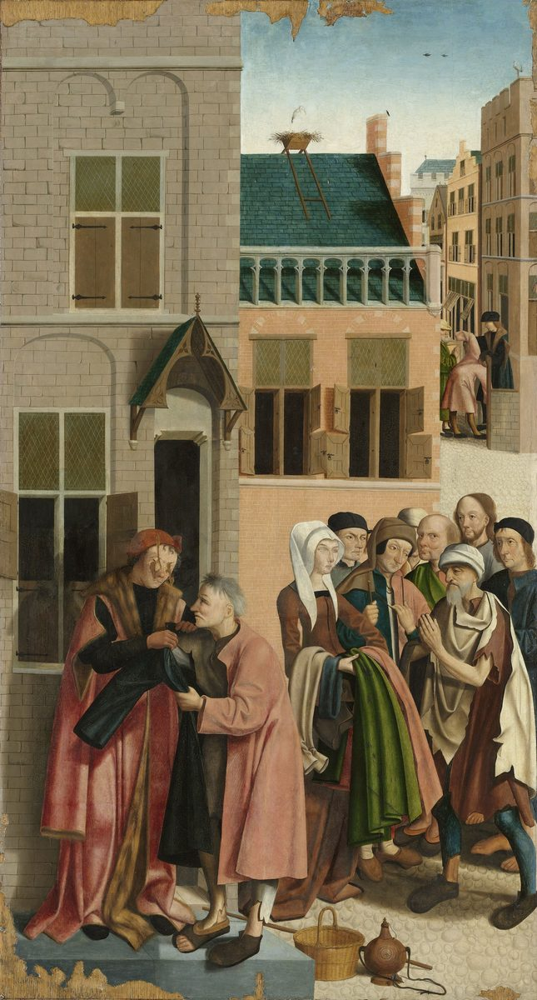

Santiago 2 — La Traducción Mister

⚠ Uno de los siete paneles que el Maestro de Alkmaar pintó para una iglesia de Alkmaar (dato referido): un vecino que viste a los pobres a su propia puerta, con Cristo entre ellos, la imagen de los versículos 15–16, «Si un hermano o una hermana están desnudos … pero no les dan lo necesario para el cuerpo».

Notas del traductor
«Hermanos míos, ¿acaso tienen la fe de nuestro Señor Jesucristo de la gloria con acepción de personas?». El griego puede ser una pregunta, como lo puntúa el texto impreso aquí, o un mandato, «no tengan»; el estante se divide. Prosōpolēmpsía, «acepción de personas», literalmente recibir el rostro, está en cuatro versículos; los otros tres dicen que no hay «acepción de personas» para con Dios, como en Romanos 2:11 (diccionario). «De la gloria» es un genitivo suelto al final del nombre, leído como «nuestro glorioso Señor», como «el Señor de la gloria» (el título de 1 Corintios 2:8), o como «Jesucristo, nuestra gloria»; esta página conserva el orden griego y no elige. La RV 1909 dice «no tengáis la fe de nuestro Señor Jesucristo glorioso en acepción de personas»; la TNM 1987 dice «nuestro Señor Jesucristo, nuestra gloria, con actos de favoritismo, ¿verdad?»; la NVI dice «no debe dar lugar a favoritismos».
«Porque si en su sinagoga entra un hombre con anillos de oro en los dedos y con ropa resplandeciente, y entra también un pobre con ropa inmunda …». «Sinagoga» es synagōgē: Santiago nombra la reunión con la palabra de la asamblea judía, y más adelante llama a la comunidad ekklēsía, «congregación», en 5:14 (diccionario). Chrysodaktýlios, «con anillos de oro en los dedos», de dedos de oro, está en un solo versículo del Nuevo Testamento (diccionario). «Resplandeciente» es lamprós, la «vestidura resplandeciente» que Herodes pone a Jesús en Lucas 23:11 (diccionario). «Inmunda» es el adjetivo de la «inmundicia» que hay que desechar en Santiago 1:21. La RV60 dice «Porque si en vuestra congregación entra un hombre con anillo de oro», donde el griego dice sinagoga; la TNM 1987 dice «si entra en una reunión de ustedes un varón con anillos de oro en los dedos»; la NVI dice «Supongamos que en el lugar donde se reúnen entra un hombre».
«“Tú siéntate aquí en buen lugar”, y al pobre le dicen: “Tú quédate de pie, o siéntate allí bajo mi estrado”, ¿no han hecho distinciones entre ustedes mismos y han llegado a ser jueces con malos pensamientos?». «Mirar con favor» es epiblépō, el verbo de María, «porque miró la humilde condición de su esclava», en Lucas 1:48 (diccionario). «Estrado» es hypopódion (diccionario). El texto impreso tiene «Tú quédate de pie, o siéntate allí»; Tregelles tiene «Tú quédate allí de pie, o siéntate»; Robinson–Pierpont tiene «Tú quédate allí de pie, o siéntate aquí» (el aparato). «Hacer distinciones» es diakrínō, el verbo del que «duda» en Santiago 1:6; aquí se lee como hacer distinciones o como estar dividido por dentro. La RV60 dice «Estate tú allí en pie, o siéntate aquí bajo mi estrado»; la NVI dice «Siéntate en el suelo, a mis pies»; la TNM 1987 dice «tienen distinción de clases entre sí».
«¿No escogió Dios a los pobres en el mundo para que sean ricos en fe y herederos del reino que prometió a los que lo aman?». «En el mundo» es un dativo que puede significar pobres a los ojos del mundo o pobres en los bienes de este mundo; Robinson–Pierpont tiene «del mundo» (el aparato). «Para que sean» se suple. «El reino» recuerda «Felices los pobres, porque de ustedes es el reino de Dios» en Lucas 6:20, y «prometió a los que lo aman» es la frase de la corona de la vida en Santiago 1:12. La RV60 dice «¿No ha elegido Dios a los pobres de este mundo, para que sean ricos en fe»; la TNM 1987 dice «Dios escogió a los que son pobres respecto al mundo para que sean ricos en fe»; la NVI dice «a los que son pobres, según el mundo».
«Pero ustedes han deshonrado al pobre. ¿No son los ricos los que los oprimen, y ellos mismos los que los arrastran a los tribunales? ¿No son ellos los que blasfeman el buen nombre que fue invocado sobre ustedes?». Katadynasteúō, «oprimir», está en dos versículos; el otro es «todos los que eran oprimidos por el diablo» en Hechos 10:38 (diccionario). «Arrastrar» es el verbo de Pablo y Silas «arrastraron» a la plaza en Hechos 16:19. Kritērion, «tribunal», está en tres versículos, los otros dos en 1 Corintios 6:2 y 6:4. «El buen nombre invocado sobre ustedes» es el modismo de un nombre pronunciado sobre lo que pertenece a su dueño, como en Amós citado en Hechos 15:17, «todas las naciones sobre las cuales ha sido invocado mi nombre»; de qué nombre habla Santiago, el de Cristo o el de Dios, no lo dice. La RV60 dice «¿No blasfeman ellos el buen nombre que fue invocado sobre vosotros?»; la TNM 1987 dice «el nombre excelente por el cual ustedes fueron llamados»; la NVI dice «el buen nombre de aquel a quien ustedes pertenecen».
«Si de veras cumplen la ley real conforme a la Escritura: ‘Amarás a tu prójimo como a ti mismo’, hacen bien. Pero si hacen acepción de personas, cometen pecado y son convictos por la ley como transgresores». La Escritura es Levítico 19:18, «amarás a tu prójimo como a ti mismo: Yo Jehová», citada con las palabras de su griego (comprobado), como la cita Jesús en Mateo 22:39 y Pablo en Romanos 13:9 y Gálatas 5:14. Basilikós, «real», está en cinco versículos, entre ellos el «funcionario real» de Juan 4:46 (diccionario); «real» se lee como la ley del rey, la ley del reino del versículo 5, o la ley que gobierna a las demás. El verbo prosōpolēmptéō, «hacer acepción de personas», está en un solo versículo. Parabátēs, «transgresor», está en cinco versículos, entre ellos Romanos 2:25 y Gálatas 2:18 (diccionario). La RV60 dice «Si en verdad cumplís la ley real, conforme a la Escritura»; la TNM 1987 dice «el llevar a cabo la ley real»; la NVI dice «la ley suprema de la Escritura».
⚠ «Porque cualquiera que guarda toda la ley, pero da un traspié en un solo punto, se ha hecho culpable de todo. Porque el que dijo: ‘No cometas adulterio’, dijo también: ‘No mates’». El verbo ptaíō, «dar un traspié», está en cuatro versículos, entre ellos «todos damos muchos traspiés» en 3:2 y Romanos 11:11 (diccionario). Los dos mandamientos van en el orden del griego del Éxodo, que tiene «No cometerás adulterio» antes de «No matarás»; el hebreo de Éxodo 20:12 (20:13–16 en las Biblias en castellano) y de Deuteronomio 5:16 (5:17–20) pone primero el matar, y también el griego del Deuteronomio (todo comprobado). El adulterio va primero otra vez en Lucas 18:20 y Romanos 13:9. Robinson–Pierpont tiene el futuro «no cometerás» por «no cometas» (el aparato). La RV60 dice «pero ofendiere en un punto, se hace culpable de todos»; la TNM 1987 dice «pero da un paso en falso en un solo punto»; la NVI dice «ya es culpable de haberla quebrantado toda».
«Así hablen y así actúen, como quienes han de ser juzgados por una ley de libertad. Porque el juicio es sin misericordia para el que no ha hecho misericordia; la misericordia se gloría sobre el juicio». «Una ley de libertad» es la frase de Santiago 1:25, «la ley perfecta, la de la libertad», aquí sin artículo. Anéleos, «sin misericordia», está en un solo versículo (diccionario). El verbo katakaucháomai, «gloriarse sobre», está en tres versículos; Pablo lo usa en Romanos 11:18, «no te gloríes sobre las ramas» (diccionario). La RV60 dice «y la misericordia triunfa sobre el juicio»; la RV 1909 dice «y la misericordia se gloría contra el juicio»; la TNM 1987 dice «La misericordia se alboroza triunfalmente sobre el juicio».
⚠ «¿De qué sirve, hermanos míos, si alguno dice que tiene fe, pero no tiene obras? ¿Puede esa fe salvarlo?». Óphelos, «provecho», está en tres versículos: dos veces en este párrafo y en 1 Corintios 15:32, «¿de qué me sirve?» (diccionario). La pregunta trata de una fe que alguien «dice» tener. «Esa fe» traduce el artículo griego, «la fe», que remite a la fe recién nombrada; la RV60 dice «¿Podrá la fe salvarle?», mientras la TNM 1987 dice «Esa fe no puede salvarlo, ¿verdad?» y la NVI dice «¿Acaso podrá salvarlo esa fe?».
«Si un hermano o una hermana están desnudos y les falta el alimento de cada día, y alguno de ustedes les dice: ‘Vayan en paz, abríguense y sáciense’, pero no les dan lo necesario para el cuerpo, ¿de qué sirve? Así también la fe, si no tiene obras, está muerta en sí misma». «Desnudos» puede significar mal vestidos. «Faltar» es el verbo de «sin que les falte cosa alguna» en Santiago 1:4 y de «carece de sabiduría» en 1:5. Ephēmeros, «de cada día», está en un solo versículo (diccionario). «Vayan en paz» es la despedida de Marcos 5:34. El verbo thermaínō, «abrigarse, calentarse», está en cinco versículos; los otros son Pedro «calentándose» en el patio del sumo sacerdote, como en Marcos 14:54 (diccionario). «Saciarse» es chortázō, «ellos serán saciados» en Mateo 5:6 (ya en estas páginas). Epitēdeios, «lo necesario», está en un solo versículo (diccionario). La RV60 dice «Id en paz, calentaos y saciaos»; la TNM 1987 dice «Vayan en paz, manténganse calientes y bien alimentados»; la NVI dice «Vaya en paz; abríguese y coma hasta saciarse».
⚠ «Pero alguno dirá: ‘Tú tienes fe, y yo tengo obras’. Muéstrame tu fe sin las obras, y yo te mostraré la fe por mis obras». El griego no tiene comillas, y dónde terminan las palabras del objetor se discute: después de «yo tengo obras», como se imprime aquí; más adelante, incluyendo el desafío; o leyendo los dos pronombres como «uno … otro». Esta página puntúa como lo hace la mayor parte del estante y no lo decide. Robinson–Pierpont tiene «a partir de tus obras» en lugar de «sin las obras», y «mi fe» en lugar de «la fe» (el aparato). La Geneva inglesa dice «show me thy faith out of thy works», «muéstrame tu fe a partir de tus obras»; la RV60 dice «Muéstrame tu fe sin tus obras, y yo te mostraré mi fe por mis obras»; la TNM 1987 dice «Muéstrame tu fe aparte de las obras».
«¿Tú crees que Dios es uno? Bien haces. También los demonios creen, y se estremecen. ¿Quieres saber, hombre vacío, que la fe sin las obras es ociosa?». «Dios es uno» es la confesión de Deuteronomio 6:4, «Jehová nuestro Dios, Jehová uno es», cuyo griego dice «Kýrios es uno» (comprobado), y de Marcos 12:29 y Romanos 3:30. Las ediciones ordenan las palabras de tres maneras, «Dios es uno» o «hay un solo Dios» (el aparato). Phríssō, «estremecerse», está en un solo versículo (diccionario). «Ociosa» es argē, de a-ergós, «sin obra», un juego con «obras»; es la «palabra ociosa» de Mateo 12:36 (diccionario). Robinson–Pierpont tiene «muerta» en lugar de «ociosa» (el aparato). La RV60 dice «También los demonios creen, y tiemblan»; la TNM 1987 dice «la fe aparte de las obras es inactiva»; la NVI dice «la fe sin obras es estéril».
«¿No fue justificado por obras Abraham nuestro padre cuando ofreció a su hijo Isaac sobre el altar? Ves que la fe obraba juntamente con sus obras, y que por las obras la fe fue hecha completa». La ofrenda es Génesis 22:9 (ya en estas páginas), donde Abraham «ató a Isaac su hijo, y lo puso sobre el altar». «Ofrecer» es el verbo de Hebreos 11:17, que cuenta el mismo acto «por fe». «Obrar juntamente» es synergéō, como en Romanos 8:28 (diccionario). «Hecha completa» es teleióō, el verbo del adjetivo «perfectos» de Santiago 1:4, «para que sean perfectos y cabales». La RV60 dice «¿No ves que la fe actuó juntamente con sus obras»; la TNM 1987 dice «¿No fue declarado justo por obras nuestro padre Abrahán»; la NVI dice «¿No fue declarado justo nuestro padre Abraham por lo que hizo».
«Y se cumplió la Escritura que dice: ‘Abraham creyó a Dios, y le fue contado como justicia’, y fue llamado amigo de Dios». La Escritura es Génesis 15:6 (ya en estas páginas), «Y creyó a Jehová, y se lo contó por justicia»: el hebreo tiene el nombre divino, y el griego del Génesis, como Santiago, dice «Dios» (comprobado). Pablo cita la misma línea en Romanos 4:3 y Gálatas 3:6. La frase phílos theoú, «amigo de Dios», está en un solo versículo; el hebreo llama a Abraham amigo de Dios en Isaías 41:8 y 2 Crónicas 20:7, donde el griego dice «a quien amé» y «tu amado» (todo comprobado). La TNM 1987 dice «Abrahán puso fe en Jehová», siguiendo el hebreo donde Santiago dice «Dios»; la RV60 dice «y le fue contado por justicia»; la RV 1909 dice «y le fué imputado á justicia».
⚠ «Ustedes ven que el hombre es justificado por obras, y no por la fe solamente». La frase ek písteōs mónon, «por la fe solamente», está en un solo versículo del Nuevo Testamento, este. «Justificar» es dikaióō (diccionario). Pablo escribe en Romanos 3:28, «el hombre es justificado por fe, aparte de obras de ley», y en Romanos 4:2, «si Abraham fue justificado por obras, tiene de qué jactarse, pero no delante de Dios»; el mismo Abraham y la misma línea del Génesis sirven a los dos. Cómo encajan se lee de más de una manera. Muchos lectores toman las palabras en sentidos distintos: las «obras de ley» de Pablo frente a las obras de misericordia de Santiago, la fe que confía de Pablo frente a una fe que alguien solo «dice» tener, y «justificado» en Santiago como mostrado justo. Otros leen a Santiago como respuesta a un mal uso de la enseñanza de Pablo, y otros como un desacuerdo real. Lutero llamó a Santiago «una epístola de paja», y el Concilio de Trento citó este versículo en su decreto sobre la justificación (los dos datos referidos, no comprobados aquí). Esta página traduce a los dos escritores con las mismas palabras, «justificado», «fe», «obras», y no elige. La RV60 dice «y no solamente por la fe»; la TNM 1987 dice «y no por fe solamente»; la NVI dice «y no solo por la fe».
«Y de la misma manera, ¿no fue también Rahab la prostituta justificada por obras cuando recibió a los mensajeros y los hizo salir por otro camino? Porque así como el cuerpo sin espíritu está muerto, así también la fe sin obras está muerta». Rahab es la mujer de Josué 2:1, perdonada en Josué 6:25 «porque escondió a los mensajeros que Josué envió»; el hebreo dice allí «mensajeros», y el griego de Josué «los que espiaron» (comprobado). Hebreos 11:31 cuenta el mismo acto «por fe»: «había recibido en paz a los espías». El verbo hypodéchomai, «recibir» como huésped, está en tres versículos; los otros son Marta en Lucas 10:38 y Zaqueo en Lucas 19:6 (diccionario). Westcott–Hort omiten «Porque» en el versículo 26 (el aparato). La RV60 dice «Asimismo también Rahab la ramera»; la NVI dice «cuando hospedó a los espías»; la TNM 1987 dice «como el cuerpo sin espíritu está muerto».
Patrones que vale la pena recordar
Donde esta traducción conserva las palabras exactas: «acepción de personas» y «hacer acepción de personas», la palabra de Romanos 2:11; «sinagoga», no «iglesia»; «de la gloria», con sus lecturas en la nota; «inmunda», como la «inmundicia» de 1:21; «hacer distinciones», el verbo del que «duda» en 1:6; «la ley real»; «da un traspié», como en Romanos 11:11; «una ley de libertad», como en 1:25; «se gloría sobre», como en Romanos 11:18; «falta», como en 1:4–5; «ociosa»; «justificado», «fe» y «obras», las mismas palabras que en Romanos; «contado», como en Romanos 4:3; «hecha completa»; y «mensajeros», como en Josué 6:25.
Ecos cumplidos. El que duda de Santiago 1:6; el humilde y el rico de Santiago 1:9; prometió a los que lo aman de Santiago 1:12; la inmundicia de Santiago 1:21; los hacedores de Santiago 1:22; la ley de la libertad de Santiago 1:25; y la fe y las obras, el pasaje que abrió Santiago 1:22.
Ecos sembrados. «Todos damos traspiés» en 3:2, y la lengua que nadie puede domar en el capítulo 3; «la amistad con el mundo» en 4:4, donde «amigo del mundo» responde a «amigo de Dios»; los ricos, que aquí «arrastran» y «oprimen», otra vez en 5:1–6; y los ancianos de la ekklēsía en 5:14.
Lo siguiente en este libro: Santiago 3, ya en estas páginas. La lengua: «todos damos muchos traspiés», un freno en la boca del caballo, un fuego pequeño y un gran bosque, y «la sabiduría de lo alto».